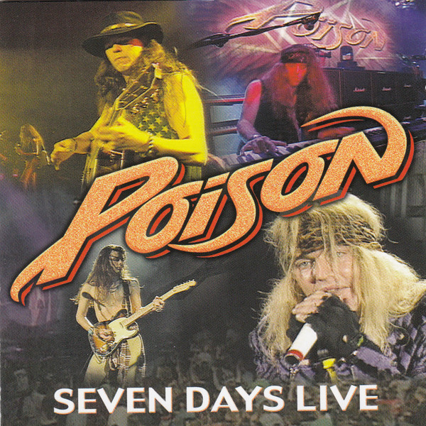
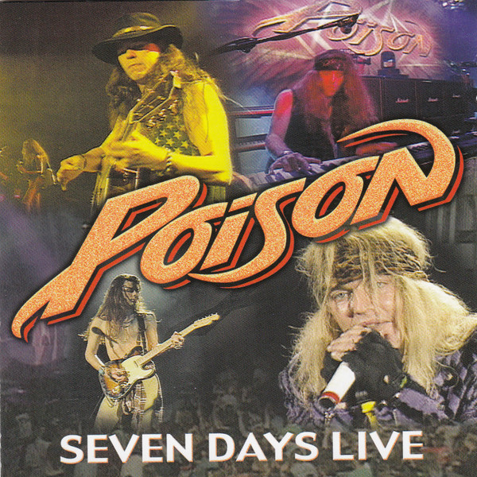

About Poison:
Poisonis an American glam-metal or 'hair-metal' band formed in 1983, in Mechanicsburg, PA. The band consists of lead singer and rhythm guitarist Bret Michaels, drummer Rikki Rockett, bassist and pianist Bobby Dall, and lead guitarist and backing vocalist C.C. DeVille. The band achieved commercial success in the mid-1980s and 1990s, and has sold 15 million records in the United States and over 50 million albums worldwide.
The band is perhaps best known for the Billboard Number One hit single"Every Rose Has Its Thorn."Poison has had other top 40 hit singles in the 1980s and 1990s, including"Talk Dirty to Me", "I Won't Forget You", "Nothin' but a Good Time", "Fallen Angel", "Your Mama Don't Dance", "Unskinny Bop", "Something to Believe In", "Ride the Wind",and"Life Goes On". The band's breakthrough debut album, the multi-platinumLook What the Cat Dragged In, was released May 23, 1986. The debut album was certified gold in 1987 and 3x multi-platinum in 1990 by the RIAA.


| Album Title | Release Date | Link To Album Info & Track Listing |
|---|---|---|
| Look What the Cat Dragged In | 1986 | https://www.discogs.com/master/94319-Poison-Look-What-The-Cat-Dragged-In |
| Open Up and Say... Ahh! | 1988 | https://www.discogs.com/master/94324-Poison-Open-Up-And-Say-Ahh |
| Flesh & Blood | 1990 | https://www.discogs.com/master/94317-Poison-Flesh-Blood |
| Swallow This Live | 1991 | https://www.discogs.com/master/94331-Poison-Swallow-This-Live |
| Native Tongue | 1993 | https://www.discogs.com/master/94320-Poison-Native-Tongue |
| Crack a Smile... and More! | 2000 | https://www.discogs.com/master/243189-Poison-Crack-A-Smile-And-More |
| Power To The People | 2000 | https://www.discogs.com/master/482993-Poison-Power-To-The-People |
| Hollyweird | 2002 | https://www.discogs.com/release/1350047-Poison-Hollyweird |
| Open Up And Say…Ahh! (20th Anniversary Edition) | 2005 | https://www.discogs.com/release/22023481-Poison-Open-Up-And-SayAhh-20th-Anniversary-Edition |
| Great Big Hits Live! | 2006 | https://www.discogs.com/release/1825270-Poison-Great-Big-Hits-Live |
| Poison'd! (Cover Songs) | 2007 | https://www.discogs.com/master/94326-Poison-Poisond |
| Seven Days Live! | 2008 | https://www.discogs.com/master/482991-Poison-Seven-Days-Live |
| Live Raw & Uncut | 2008 | https://www.discogs.com/release/2983492-Poison-Live-Raw-Uncut |
| The Paris Years 1983-85 | 2022 | https://www.discogs.com/release/22468573-Poison-The-Paris-Years-1983-85- |
 
